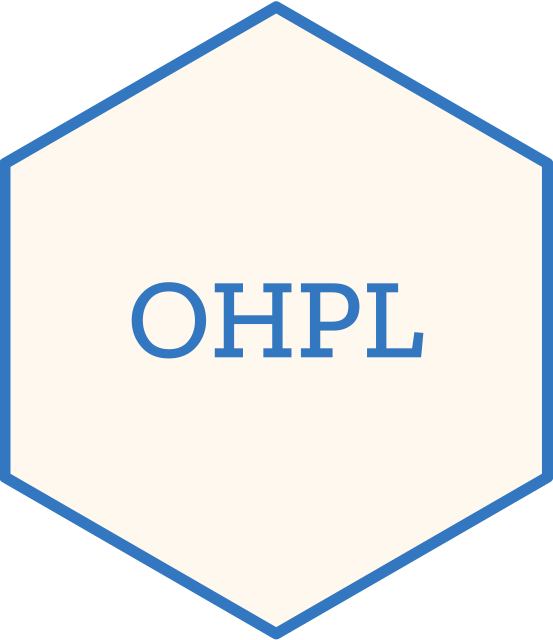

Changelog
Source:NEWS.md
OHPL 1.4.1
Improvements
- Reformatted roxygen2 documentation to use Markdown syntax and further align with the tidyverse style guide (#6).
- Updated
inst/CITATIONto usebibentry()to replacecitEntry()(#5). - Simplified the package help topic by using the special sentinel
"_PACKAGE"(#4).